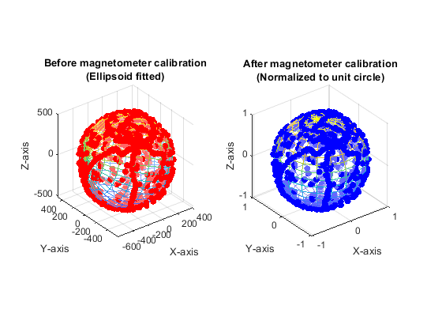

clc
clear
close all
dataFileName = 'my_data2.txt';
calibrationSwitch = 0;
rawData = importdata(dataFileName);
xUncalibrated = rawData(:,1);
yUncalibrated = rawData(:,2);
zUncalibrated = rawData(:,3);
XCalibrated = zeros(length(xUncalibrated),1);
YCalibrated = zeros(length(xUncalibrated),1);
ZCalibrated = zeros(length(xUncalibrated),1);
ellipsoidParams = fit_ellipsoid(xUncalibrated,yUncalibrated,zUncalibrated);
ellipsoidMatrix = [ellipsoidParams(1),ellipsoidParams(6),ellipsoidParams(5);ellipsoidParams(6),ellipsoidParams(2),ellipsoidParams(4);ellipsoidParams(5),ellipsoidParams(4),ellipsoidParams(3)];
offsetVector = [ellipsoidParams(7),ellipsoidParams(8),ellipsoidParams(9)]';
kValue = ellipsoidParams(10);
if calibrationSwitch == 1
calibrationScale = 1;
calibrationRadius = sqrt(offsetVector'*(ellipsoidMatrix\offsetVector)-kValue);
elseif calibrationSwitch == 0
calibrationScale = (1/sqrt(offsetVector'*(ellipsoidMatrix\offsetVector)-kValue));
calibrationRadius = 1;
end
offsetVectorCalibrated = - ellipsoidMatrix \ offsetVector;
calibrationMatrix = real(calibrationScale*sqrt(ellipsoidMatrix));
for dataIter = 1:length(xUncalibrated)
uncalibratedData = [xUncalibrated(dataIter); yUncalibrated(dataIter); zUncalibrated(dataIter)];
calibratedData = calibrationMatrix*(uncalibratedData - offsetVectorCalibrated);
XCalibrated(dataIter) = calibratedData(1);
YCalibrated(dataIter) = calibratedData(2);
ZCalibrated(dataIter) = calibratedData(3);
end
subplot(1,2,1);
plot_fitted_ellipsoid(ellipsoidParams);
hold on;
scatter3(xUncalibrated,yUncalibrated,zUncalibrated,'fill','MarkerFaceColor','red');
title({'Before magnetometer calibration','(Ellipsoid fitted)'});
xlabel('X-axis'); ylabel('Y-axis'); zlabel('Z-axis');
axis equal;
subplot(1,2,2);
plot_sphere_shape([0,0,0],calibrationRadius);
hold on;
scatter3(XCalibrated,YCalibrated,ZCalibrated,'fill','MarkerFaceColor','blue');
if calibrationSwitch == 0
title({'After magnetometer calibration','(Normalized to unit circle)'});
else
title({'After magnetometer calibration'});
end
xlabel('X-axis'); ylabel('Y-axis'); zlabel('Z-axis');
axis equal;
fprintf('3D magnetometer calibration via ellipsoid fitting');
fprintf('\n~~~~~~~~~~~~~~~~~~~~~~~~~~~~~~~~~~~~~~~~~~~~~~~~~~~~~~');
fprintf('\nThe Calibration Equation to be Applied:')
fprintf('\n\t\t\t\th_calibrated = CalibrationMatrix * (h_uncalibrated - OffsetVector) \nWhere,')
fprintf('\nh_uncalibrated = Measured sensor data vector');
fprintf('\nh_hat = Vector of Calibrated Sensor Data');
fprintf('\nh_calibrated = Vector of Calibrated Sensor Data');
fprintf('\n\nCalibrationMatrix =\n'); disp(calibrationMatrix);
fprintf('\nOffsetVector =\n'); disp(offsetVectorCalibrated);
3D magnetometer calibration via ellipsoid fitting
~~~~~~~~~~~~~~~~~~~~~~~~~~~~~~~~~~~~~~~~~~~~~~~~~~~~~~
The Calibration Equation to be Applied:
h_calibrated = CalibrationMatrix * (h_uncalibrated - OffsetVector)
Where,
h_uncalibrated = Measured sensor data vector
h_hat = Vector of Calibrated Sensor Data
h_calibrated = Vector of Calibrated Sensor Data
CalibrationMatrix =
0.0020 0 0
0 0.0020 0
0 0 0.0020
OffsetVector =
-84.7818
-48.6638
-7.3369
